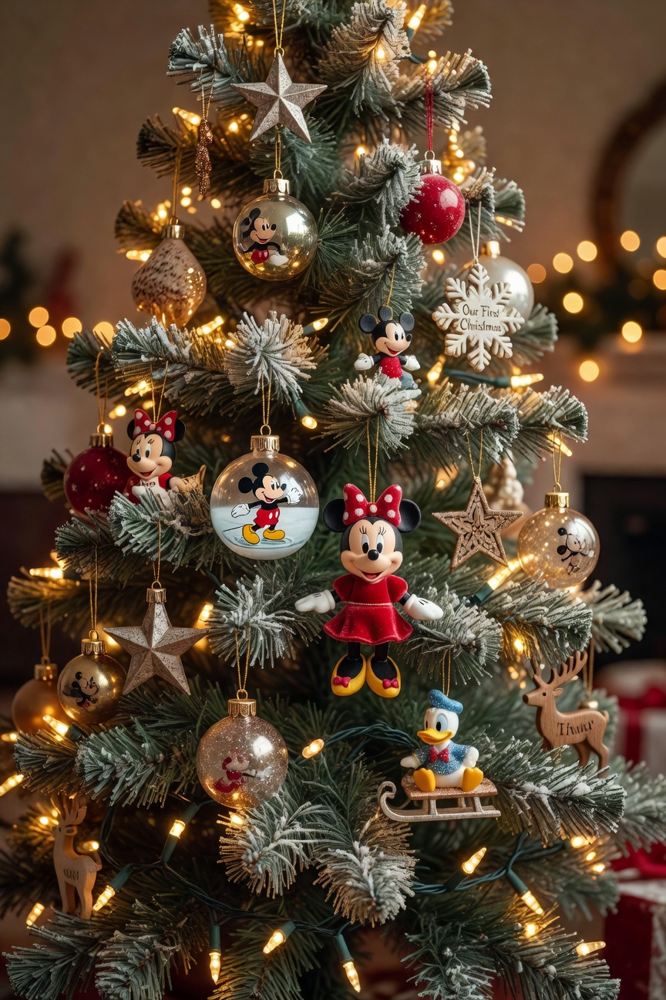
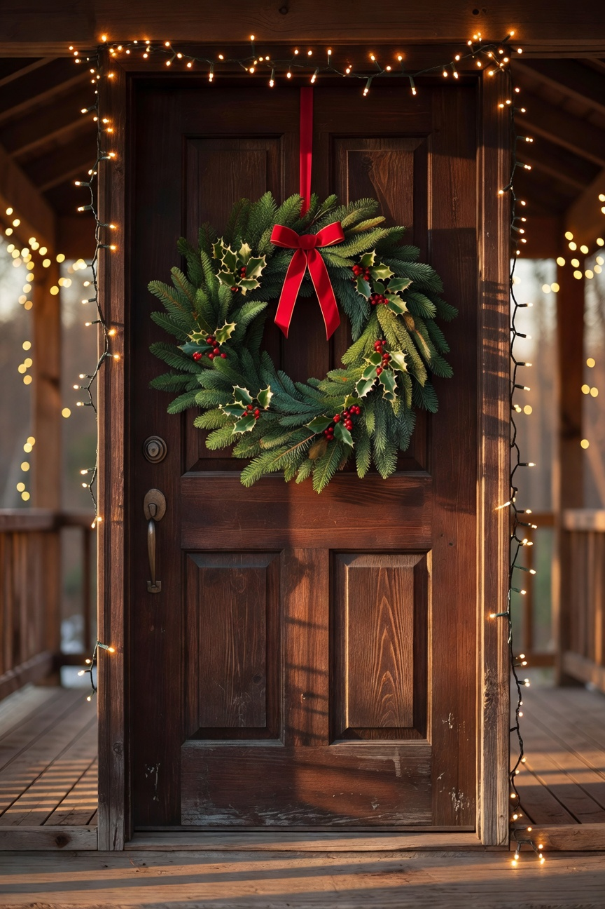

Christmas is my favorite time of year in this house. I love the way it feels when everything is decorated -- the lights, the smell, the coziness of it all. I am a homebody at baseline and Christmas makes being home even better. That is saying something.
What I do not love is the credit card statement in January when you let yourself go at the fancy home decor stores. I have done that exactly once. Once was enough. Now I have a system and a budget and I stick to both.
What I Do Not Buy Every Year
All new decorations every year is both wasteful and expensive. I assess what I have in storage, retire what is worn out or that I have gotten tired of looking at, and refresh strategically. Restraint in this department is genuinely a skill I have had to develop.
The Mantle
I replaced our front door wreath, which had seen better days. Added a few new throw pillows in holiday colors to swap onto the couch -- fastest way to change the feel of a room. And I finally replaced the string lights on the mantle that had two dead sections I had been tolerating for two Christmases. Done tolerating it.
In my experience the things that make a home feel the most Christmasy are not the most expensive things. Warm white lights on everything. Garland on the mantle. A candle that smells like Christmas. These are all achievable on a real budget and they transform a space entirely.
The Tree

We have an artificial tree that we have had for many years. I add new ornaments most years -- usually one or two that mean something. There is a Disney ornament on that tree for every trip we have taken as a family, which means there are quite a few of them and I love every single one.
Carmy has knocked the tree over twice in his life. We now anchor it to the wall with fishing line. He seemed briefly humbled by this development and then forgot about it entirely.
The Front Door

A new front door wreath was the right call. Simple, classic, and the whole entry feels welcoming from the street. This is the first thing people see and it is worth getting right.
For the Kids’ Rooms
All three kids have some small holiday decorations in their rooms. A string of lights, a small piece, something that makes their space feel festive. Even teenagers like their room to feel like Christmas -- they just will not always admit it. I let them each pick one thing. It has become a little tradition.
The Bottom Line
You do not need to spend a fortune to have a home that feels special at Christmas. You need some intention, a little restraint, and the willingness to add things slowly over time rather than all at once. Our house looked beautiful this year. Our guests said so. No regret in January.
Wishing everyone the warmest holiday season. I am grateful for everyone reading along.
-- Christin Marie